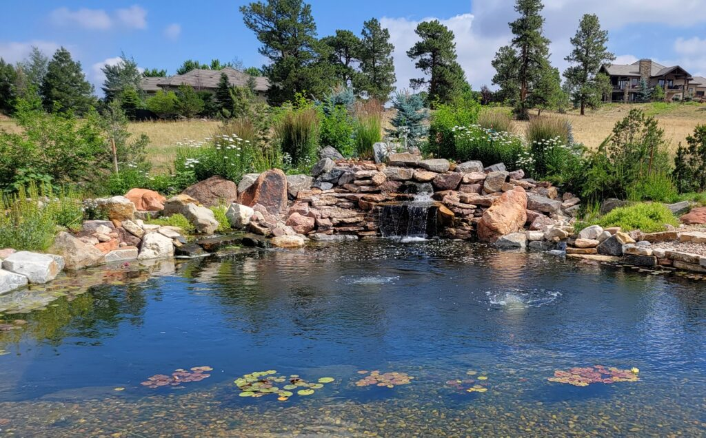

Experiment 2 - Pond Generative Landscape
Description
This project offers a generative, living impression of this inspiring image:

Technical
Relation to inspiring image:
Reflection
I wrote most of the code, with some aspects being derived from the original sample program. Generally, this project felt relatively straightforward to accomplish, as it used tools I’m used to experimenting with in p5.js. The biggest obstacle for this project was my physical health, as chronic pain flare ups prevented me from working on it for most of the week. I’m hoping they won’t be as big of an issue in the future, but I’ll generally try to gear my workflow going forward so I can manage to work better under these conditions.